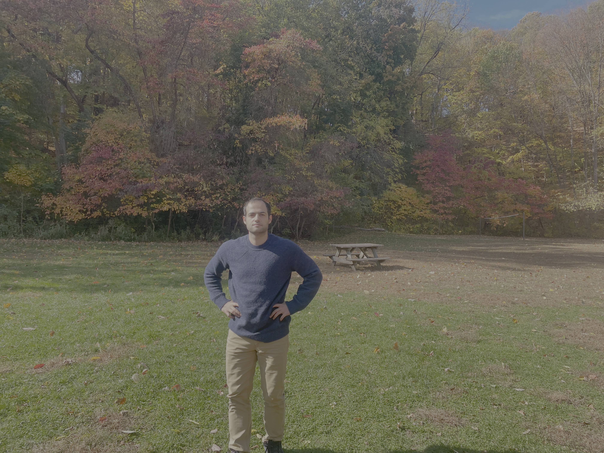

LLM Inference Benchmarking
Comparing LLM inference engines (vLLM, TGI) in latency and throughput.
vLLM
TGI
FastAPI
Docker
Machine learning researcher and engineer experienced in model training, evaluation, and deployment. Ph.D. in theoretical physics.

Comparing LLM inference engines (vLLM, TGI) in latency and throughput.
Deployed a retrieval-augmented QA engine focused on a history topic.
Adapting open LLMs with LoRA and QLoRA for text summarization.
Using text-encoder information to optimize cross-attention layers in Stable Diffusion. Our training-free attention control method improves text-image alignment.
Steering diffusion models to generate effective samples that improve ViT classification accuracy in low-data medical domains.
On electromagnetic gauge fields, general relativity, celestial holography, and p-form symmetries.
View on Google Scholar →Email: efakhabi@purdue.edu